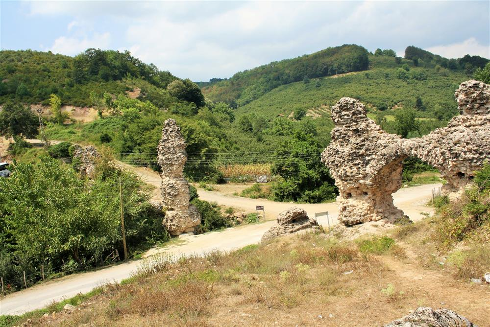
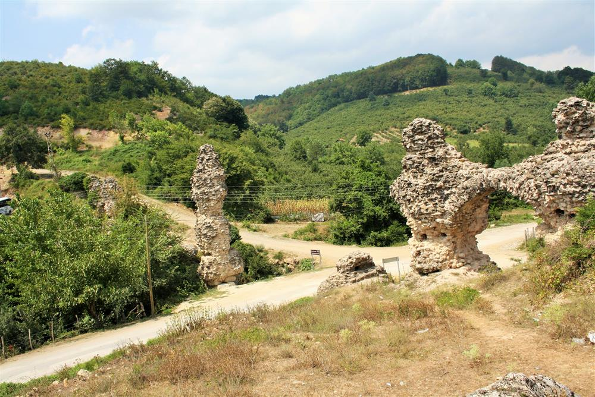

MİRASIMIZ
Doğa ile iç içe olan Düzce, koca bir tarihi içerisinde barındıran kentlerimizden biri. Düzce’de pek çok tarihi
yer bölgede geçmişte yaşam süren Cenevizlilerden kalmış. Diğer yandan Osmanlı döneminden kalma köprüler,
türbeler ve camiler de kentin tarihi dokusunu oluşturan unsurlar arasında.
Konuralp bölgesinde şekillenen Düzce’nin tarihi incelendiğinde MÖ 3. yüzyıla kadar uzandığı görülmektedir.
Şehir, MÖ 74 senesine kadar Bithinyalıların hakimiyeti altında kaldıktan sonra Romalılar tarafından ele
geçirilmiştir. İsmi “Prusias ad Hypium” olarak değiştirilen şehir, Roma döneminde bataklık halinden
uzaklaştırılarak verimli bir tarım bölgesi olarak değerlendirilmiştir.
1323 senesinde Osmanlı Devleti’nin önemli komutanlarından Konuralp Bey’in yönetimindeki ordu, Bizanslılara
karşı verdiği savaşın ardından Düzce ve çevresini ele geçirmiştir. 16. yüzyıldan itibaren bölgedeki ticari ve
ekonomik faaliyetler gelişmeye başlamıştır. Bu gelişmeler neticesinde ise Düzce, 1871 senesinde dönemin
yerleşim merkezi olan Gümüşabad’ın yerine merkez olarak değerlendirilmiştir.
Konuralp bölgesi, ilçenin en tarihi noktalarının başında gelmektedir. Burada bulunan Konuralp Türbesi ve
Konuralp Antik Kenti Tiyatrosu geçmişten günümüze ulaşan en değerli tarihi eserlerin başında gelmektedir.
Düzce ve çevresinden çıkarılan tarihi eserler için bir sergileme alanı olan Konuralp Müzesi de gene şehrin
mutlaka görülmesi gereken tarihle ilgili yerleri arasında bulunmaktadır.
Prusias Ad Hypium Antik Kenti

Konuralp kentinin de içinde bulunduğu bölge Herodot, Xenophon ve Strabon gibi antik çağ yazarlarına göre M.Ö.
1200-700 yılları arasında Trakyalı halkların yurdu olarak anılır. Klasik dönemde Megaralılar tarafından
‘’Kieros’’ ismi ile kurulduğu bilinmektedir. M.Ö. 183’te Bithynia Kralı I Prusias tarafından ele geçirilen
kent Melen (Hypium) çayının üstündeki Prusias anlamına gelen ’’Prusias ad Hypium’’ adını alır. Bölge M.Ö. 74
yılında Bithynia Kralı IV. Nikomedes’in döneminde Roma yönetimine geçer. M.S. I. yüzyılda gelişmeye başlayan
kent, M.S. II. ve III. yüzyıllar arası sosyal refahta doruğa çıkmıştır.
Antik kentte ele geçen ithaf yazıtlarında, Prusias Ad Hypium Kenti’nin su kemerleri, agora, boule, tiyatro,
hamam gibi diğer birçok önemli anıtsal yapılarının birçoğunun bu dönemlerde inşa edildiği bilinmektedir.
Ortaçağda da kent hakkında yazıtlar ve dini toplantı kayıtlarında zengin bilgi elde edilmektedir. Erken
Hristiyanlık dönemi ve sonrasında da kent canlılığını devam ettirmiştir. Prusias ad Hypium, Orhan Gazi’nin
komutanlarından olan Konur Alp Bey tarafından 1323 yılında ele geçirilerek Osmanlı topraklarına katılmıştır.

Antik Tiyatro; Halk arasında kırk basamaklar olarak bilinen Antik Tiyatro, Helenistik Çağ’da (MÖ
300-30) yapılmıştır. Eklemeleri Roma Dönemi’ne (MÖ 30-MS 300) aittir. Prusias ad Hypium Antik Kent’inde
bulunan ve iki kademeli olan tiyatronun sahne arkası duvarı ile ikinci kademenin oturma sıralarının bir bölümü
günümüze ulaşmıştır. Ayrıca sağ ve soldan giriş çıkışları sağlayan tonozlu geçitleri de toprak üstündedir.
Tiyatronun sahne arkası binasının uzunluğu 144 ayak, genişliği 48 ayaktır.
Tiyatronun birinci kademesinde oturma sıraları görünmüyorsa da yaklaşık 17 oturma sıralık bir boyuta sahiptir.
Orta yoldan çok dik merdivenlerle bağlanan ikinci kademenin 15 sırası yerinde olmakla birlikte, aslında 4
sıralık daha yer vardır. Böylece tiyatro yaklaşık toplam 36 oturma sıralıdır. Işınsal yol kenarlarındaki sıra
başlarına aslanpençeleri işlenmiştir. Işınsal yol basamakları ile süslemeleri Side Tiyatrosu’nda görüldüğü
gibi uzunca tek bir taştan yapılmıştır. 5.978 m2 alana sahip, 100 metre uzunluğunda, 74 metre eninde bir alana
yayılan tiyatronun kapasitesi yaklaşık 10.000 kişiliktir.
Atlı Kapı; Birinci grup anıt eser Atlı Kapı ve uzantısı surlar, Prusias ad Hypium Antik Kent’inin giriş
kapısıdır. Sur duvarları farklı dönemlerde onarım sırasında yazıtlı devşirme malzemeler kullanılmıştır. At
kabartmalı kapı lentosu yerel kalker malzemeden yapılmıştır. Lento üzerinde at tasviri, Grekçe bir yazıt
bulunan ve bir Prusiaslı’nın annesine yaptırdığı mezar steli yer almaktadır.
Kemerkasım Su Kemerleri; Şehrin eski su tesisatından kalma 11 adet istinat ayağı günümüze kadar
gelebilmiştir. Üzerinden geçen su kanallarını taşıdığı sanılan su kemerleri moloz taş ile yapılmıştır.

Roma Köprüsü; Köprü Roma Dönemi’ne aittir. Mevcut ölçüleri 4.80x30.25x3.17, gerçek ölçüleri
4.80x39.20x3.17 metre ebatlarındadır. Özelliği hiç harç kullanılmadan beyaz mermer blokların bir araya
getirilmesi ile yapılmış olmasıdır.

Batı Sur Duvarları; 4.70 m yüksekliğinde 118 m uzunluğundadır. Surun batı ucunda devşirme blok taşlar
ile örülmüş giriş bulunmaktadır. Surlarda kesme blok taşlar kullanılmış ve harçsız olarak yapılmıştır. Sur
duvarları Helenistik ve Roma Dönemlerine ait olmakla beraber Doğu Roma Dönemi’nde onarımlar sırasında devşirme
olarak bomos ve diğer mimari parçalarda kullanılmıştır.
Doğa ile iç içe olan Düzce, koca bir tarihi içerisinde barındıran kentlerimizden biri. Düzce’de pek çok tarihi yer bölgede geçmişte yaşam süren Cenevizlilerden kalmış. Diğer yandan Osmanlı döneminden kalma köprüler, türbeler ve camiler de kentin tarihi dokusunu oluşturan unsurlar arasında.
Konuralp bölgesinde şekillenen Düzce’nin tarihi incelendiğinde MÖ 3. yüzyıla kadar uzandığı görülmektedir. Şehir, MÖ 74 senesine kadar Bithinyalıların hakimiyeti altında kaldıktan sonra Romalılar tarafından ele geçirilmiştir. İsmi “Prusias ad Hypium” olarak değiştirilen şehir, Roma döneminde bataklık halinden uzaklaştırılarak verimli bir tarım bölgesi olarak değerlendirilmiştir.
1323 senesinde Osmanlı Devleti’nin önemli komutanlarından Konuralp Bey’in yönetimindeki ordu, Bizanslılara karşı verdiği savaşın ardından Düzce ve çevresini ele geçirmiştir. 16. yüzyıldan itibaren bölgedeki ticari ve ekonomik faaliyetler gelişmeye başlamıştır. Bu gelişmeler neticesinde ise Düzce, 1871 senesinde dönemin yerleşim merkezi olan Gümüşabad’ın yerine merkez olarak değerlendirilmiştir.
Konuralp bölgesi, ilçenin en tarihi noktalarının başında gelmektedir. Burada bulunan Konuralp Türbesi ve Konuralp Antik Kenti Tiyatrosu geçmişten günümüze ulaşan en değerli tarihi eserlerin başında gelmektedir. Düzce ve çevresinden çıkarılan tarihi eserler için bir sergileme alanı olan Konuralp Müzesi de gene şehrin mutlaka görülmesi gereken tarihle ilgili yerleri arasında bulunmaktadır.
Prusias Ad Hypium Antik Kenti
Konuralp kentinin de içinde bulunduğu bölge Herodot, Xenophon ve Strabon gibi antik çağ yazarlarına göre M.Ö. 1200-700 yılları arasında Trakyalı halkların yurdu olarak anılır. Klasik dönemde Megaralılar tarafından ‘’Kieros’’ ismi ile kurulduğu bilinmektedir. M.Ö. 183’te Bithynia Kralı I Prusias tarafından ele geçirilen kent Melen (Hypium) çayının üstündeki Prusias anlamına gelen ’’Prusias ad Hypium’’ adını alır. Bölge M.Ö. 74 yılında Bithynia Kralı IV. Nikomedes’in döneminde Roma yönetimine geçer. M.S. I. yüzyılda gelişmeye başlayan kent, M.S. II. ve III. yüzyıllar arası sosyal refahta doruğa çıkmıştır.
Antik kentte ele geçen ithaf yazıtlarında, Prusias Ad Hypium Kenti’nin su kemerleri, agora, boule, tiyatro, hamam gibi diğer birçok önemli anıtsal yapılarının birçoğunun bu dönemlerde inşa edildiği bilinmektedir. Ortaçağda da kent hakkında yazıtlar ve dini toplantı kayıtlarında zengin bilgi elde edilmektedir. Erken Hristiyanlık dönemi ve sonrasında da kent canlılığını devam ettirmiştir. Prusias ad Hypium, Orhan Gazi’nin komutanlarından olan Konur Alp Bey tarafından 1323 yılında ele geçirilerek Osmanlı topraklarına katılmıştır.
Antik Tiyatro; Halk arasında kırk basamaklar olarak bilinen Antik Tiyatro, Helenistik Çağ’da (MÖ 300-30) yapılmıştır. Eklemeleri Roma Dönemi’ne (MÖ 30-MS 300) aittir. Prusias ad Hypium Antik Kent’inde bulunan ve iki kademeli olan tiyatronun sahne arkası duvarı ile ikinci kademenin oturma sıralarının bir bölümü günümüze ulaşmıştır. Ayrıca sağ ve soldan giriş çıkışları sağlayan tonozlu geçitleri de toprak üstündedir. Tiyatronun sahne arkası binasının uzunluğu 144 ayak, genişliği 48 ayaktır.
Tiyatronun birinci kademesinde oturma sıraları görünmüyorsa da yaklaşık 17 oturma sıralık bir boyuta sahiptir. Orta yoldan çok dik merdivenlerle bağlanan ikinci kademenin 15 sırası yerinde olmakla birlikte, aslında 4 sıralık daha yer vardır. Böylece tiyatro yaklaşık toplam 36 oturma sıralıdır. Işınsal yol kenarlarındaki sıra başlarına aslanpençeleri işlenmiştir. Işınsal yol basamakları ile süslemeleri Side Tiyatrosu’nda görüldüğü gibi uzunca tek bir taştan yapılmıştır. 5.978 m2 alana sahip, 100 metre uzunluğunda, 74 metre eninde bir alana yayılan tiyatronun kapasitesi yaklaşık 10.000 kişiliktir.
Atlı Kapı; Birinci grup anıt eser Atlı Kapı ve uzantısı surlar, Prusias ad Hypium Antik Kent’inin giriş kapısıdır. Sur duvarları farklı dönemlerde onarım sırasında yazıtlı devşirme malzemeler kullanılmıştır. At kabartmalı kapı lentosu yerel kalker malzemeden yapılmıştır. Lento üzerinde at tasviri, Grekçe bir yazıt bulunan ve bir Prusiaslı’nın annesine yaptırdığı mezar steli yer almaktadır.
Kemerkasım Su Kemerleri; Şehrin eski su tesisatından kalma 11 adet istinat ayağı günümüze kadar gelebilmiştir. Üzerinden geçen su kanallarını taşıdığı sanılan su kemerleri moloz taş ile yapılmıştır.
Roma Köprüsü; Köprü Roma Dönemi’ne aittir. Mevcut ölçüleri 4.80x30.25x3.17, gerçek ölçüleri 4.80x39.20x3.17 metre ebatlarındadır. Özelliği hiç harç kullanılmadan beyaz mermer blokların bir araya getirilmesi ile yapılmış olmasıdır.
Batı Sur Duvarları; 4.70 m yüksekliğinde 118 m uzunluğundadır. Surun batı ucunda devşirme blok taşlar ile örülmüş giriş bulunmaktadır. Surlarda kesme blok taşlar kullanılmış ve harçsız olarak yapılmıştır. Sur duvarları Helenistik ve Roma Dönemlerine ait olmakla beraber Doğu Roma Dönemi’nde onarımlar sırasında devşirme olarak bomos ve diğer mimari parçalarda kullanılmıştır.